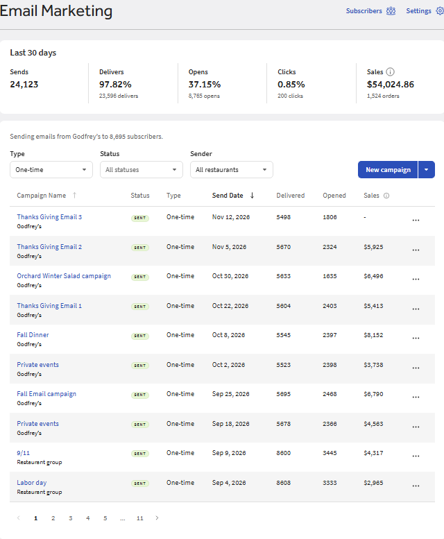

The Learning FreelanceContact ↗
The Learning FreelanceContact ↗Jonel Enad · Selected work
Portfolio
Restaurant marketing results and hands-on business operations.
Restaurant · Marketing and events
Campaign results
I managed social media, event coordination, and Toast email and SMS marketing. Select any screenshot to open it at full size.

$1.32M in attributed sales
Toast reported $1,321,722 across eight marketing demand drivers. The full reporting period is not visible in the screenshot.

1.1M social views
Combined Facebook and Instagram views from November 1, 2025 to November 1, 2026.


$54,024.86 in email sales
Sales reported by Toast Email Marketing for the dashboard’s last 30 days.

$12,546 from one SMS campaign
Sales reported by Toast for the September 26, 2026 campaign. Email and SMS figures are shown as individual channel examples.
Home organizing · Operations
Day-to-day business management
I managed sales, social media, communication with organizers, payroll, and team meetings.
Request a discovery call ↗